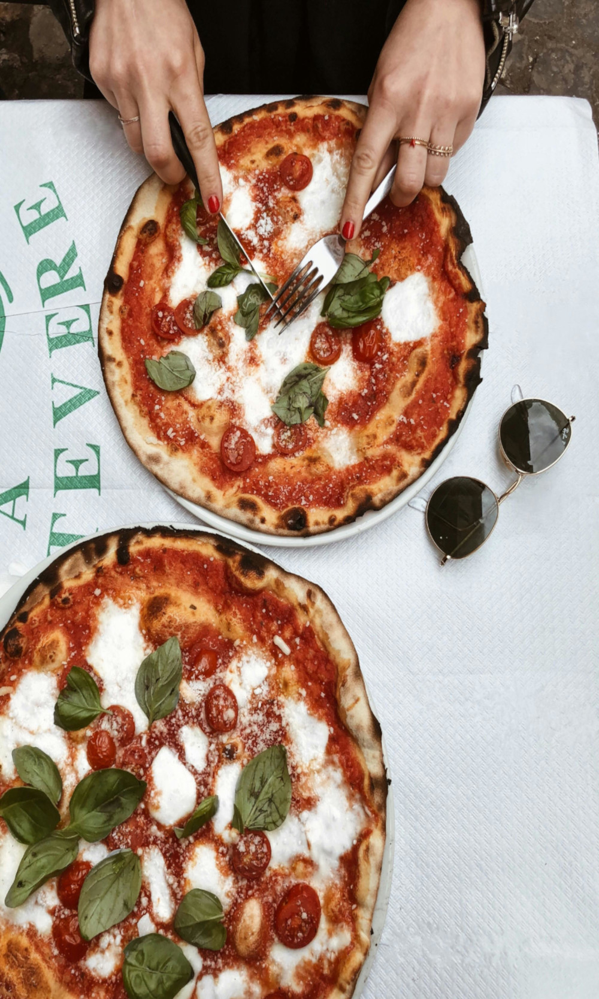

Pizza

Description
Pizza! We all love pizza, and this recipe
is to make a homemade pizza. This recipe is
to specifically make a Roasted Pepper Pesto Pizza!
Follow the instructions below and hope you enjoy!
Ingredients
- Pizza dough
- Pesto
- 1 1/2 cups grated smoked mozzarella cheese
- 1/2 cup sliced roasted red peppers
- Red pepper flakes
Steps
- Spread a thin layer of pesto onto the dough
- Top with cheese and roasted red peppers
- Bake for 10 to 12 minutes, or until the crust is browned
- Remove from the oven
- Top with dollops of more pesto, the mint leaves, and pinches
of red pepper flakes.
Home